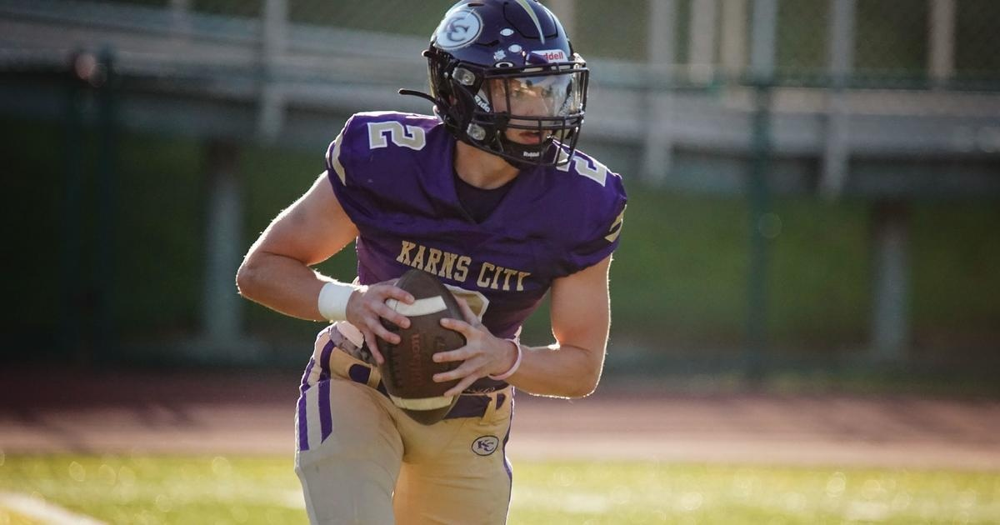

Mason Martin expected to be discharged from the hospital next weekPITTSBURGH (KDKA) -- Karns City quarterback Mason Martin is likely going to be discharged from the hospital next week, where he's been since he collapsed on the field in September. Mason Martin's dad Denny Martin posted the update to Facebook, saying he doesn't want to give a specific date in case it changes. Denny says that once is discharged, he will be continuing outpatient therapy at the UPMC Lemieux complex in Cranberry Township and that Mason's doctors think that the facility will be a great fit for him. In terms of Mason's recovery and rehab, Denny said that Mason is gaining more independence every day and improving in all areas. Mason has not yet begun to speak, but Denny says that he is communicating in other ways by nodding, giving facial expressions, and by giving a thumbs up or down. "Hopefully my next update will be from my living room." Denny said. Mason Martin's on-field injury and a collapsed lung during a His family said he was involved in a hit or tackle and continued playing defense without issue. But minutes later, when he came back on the field for the return kick-off, Mason stumbled and collapsed. The game was cut short as he was flown to the hospital. |
 |